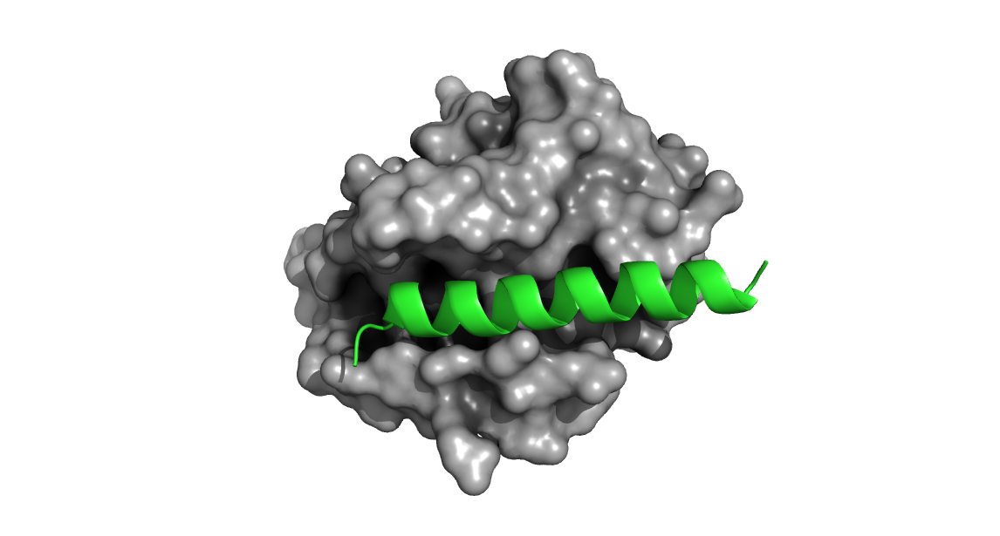
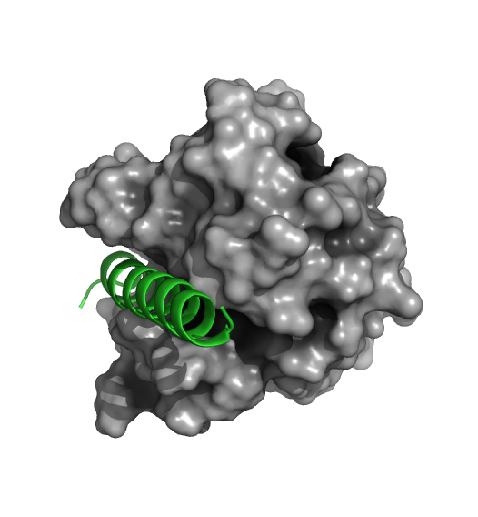
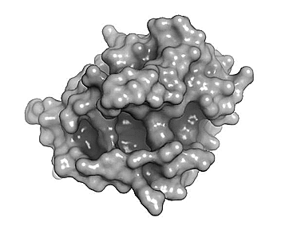

Bcl-2: An
Anti-Apoptotic Signalling Protein
Bcl-2 proteins are a family of homo- or hetero-dimeric signalling
proteins that are involved in apoptosis regulation. The Bcl-2
(B-cell lymphoma 2) protein itself is an important therapeutic drug
target for cancer, more specifically: CLL (chronic lymphocytic
leukemia). Mutations in the BCL2 gene are known to be the cause
of various cancers, cancer resistance, and autoimmune diseases.
Bcl-2 acts as an anti-apoptotic (pro-survival) signal by binding
(heterodimerizing) and inhibiting pro-apoptotic proteins including Bax
and Bak (among numerous other binding partners). Bax and Bak themselves
are two pro-apoptotic Bcl2-family (Bcl-2-like) proteins and are able to
dimerize with Bcl-2 via Bcl-2-homology (BH) domains.
Shown below is a structure of Bcl-2 bound to a segment of the BH3
domain of Bax (PDB 2XA0).

Figure 1. Bcl-2 (grey) bound
with a segment of the Bax BH3 domain (green). Note how the BH3 peptide
engages the groove of Bcl-2.
Venetoclax is a selective inhibitor of Bcl-2 and this drug is notable
in the field of fragment-based drug discovery in that it was the second
approved drug to be developed using this approach.
The figure below shows that venetoclax engages the same pocket that is
normally the binding site for BH3 domains on Bcl-2 binding partners.

Figure 2. Comparison of the
binding site for the small molecule inhibitor, venetoclax and a native
BH3 peptide (PDB: 6O0P and 2XA0, respectively).